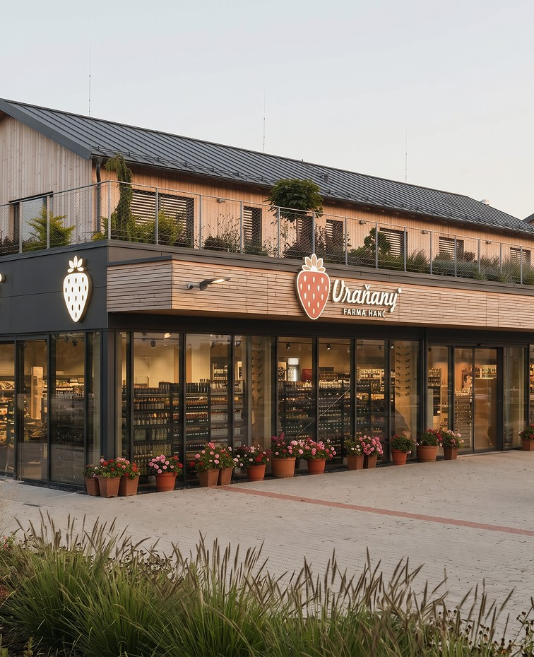
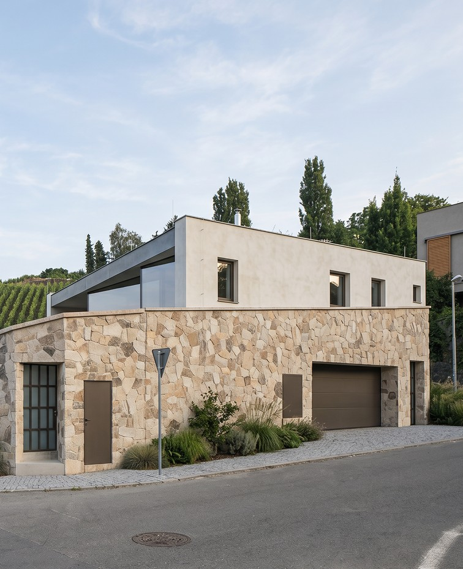
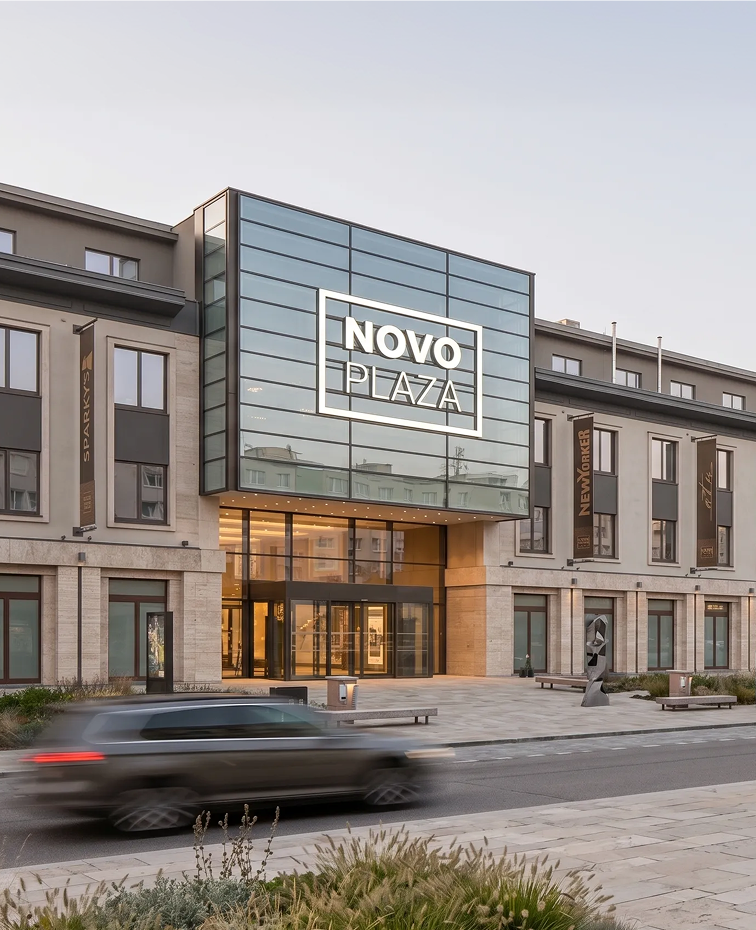
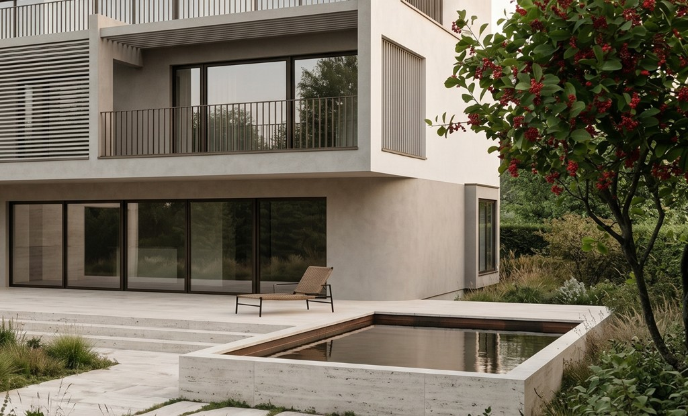
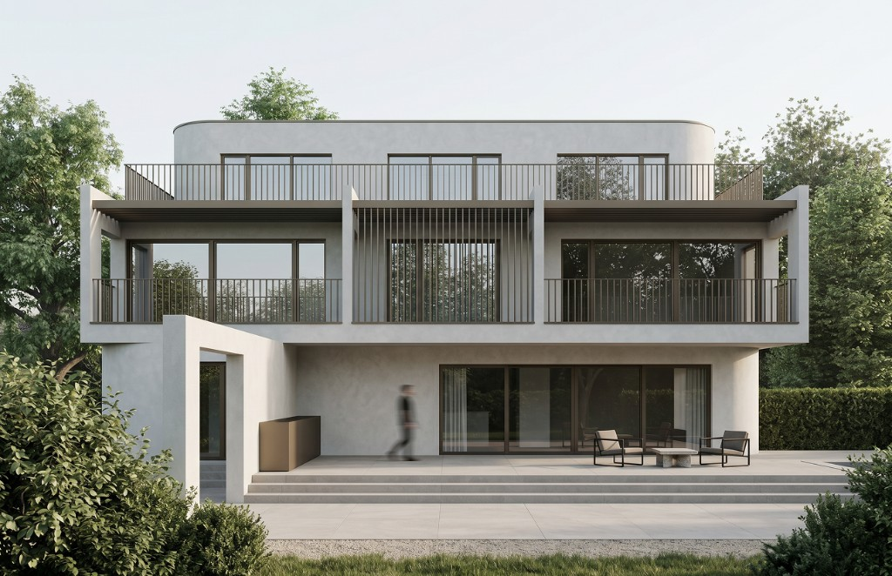

Generální dodavatel staveb
Působíme jako generální dodavatel stavebních projektů. Přebíráme odpovědnost za koordinaci...

Zajišťujeme kompletní realizaci stavebních projektů s důrazem na kontrolu nákladů, dodržení harmonogramu a kvalitu provedení.
prozkoumatJeden smluvní partner odpovědný za kompletní realizaci.
Důsledné řízení harmonogramu a logické návaznosti profesí.
Průběžná a transparentní kontrola finančních nákladů stavby.
Kompletní koordinace a dohled nad subdodavatelským řetězcem.
Pravidelný a transparentní reporting pro investora v každé fázi.

Působíme jako generální dodavatel stavebních projektů. Přebíráme odpovědnost za koordinaci...

Realizujeme rezidenční i komerční objekty včetně komplexních stavebních celků v různých fázích...

Zajišťujeme rekonstrukce objektů s ohledem na technický stav, rozpočet a budoucí využití s...


Předmětem realizace je novostavba rodinného domu.
Jsme stavební společnost zaměřená na realizaci stavebních projektů jako generální dodavatel.
Soustředíme se na efektivní řízení výstavby s důrazem na kontrolu nákladů, dodržení harmonogramu a kvalitu provedení.
Každý projekt řídíme s cílem zajistit plynulý průběh realizace a minimalizovat rizika na straně investora.
Zajišťujeme kompletní realizaci stavebních projektů s důrazem na kontrolu nákladů, dodržení harmonogramu a kvalitu provedení.
Jeden smluvní partner odpovědný za kompletní realizaci.
Důsledné řízení harmonogramu a logické návaznosti profesí.
Průběžná a transparentní kontrola finančních nákladů stavby.
Přebíráme odpovědnost za koordinaci kompletní realizace.
Realizujeme rezidenční i komerční stavební celky.
Řešíme rekonstrukce s ohledem na rozpočet i budoucí využití.
Předmětem realizace je novostavba rodinného domu.
Jsme stavební společnost zaměřená na realizaci stavebních projektů jako generální dodavatel.
 AUSTIS Pozemní stavby s.r.o
AUSTIS Pozemní stavby s.r.o